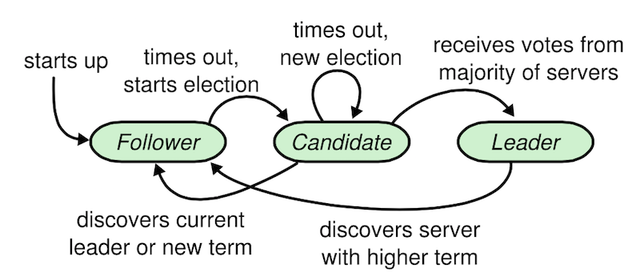

6.824, Raft
Raft是一个分布式共识协议。
提到分布式共识协议，不得不提Paxos。Paxos几乎已经成为一致性协议的代名词，其正确性已经被理论证明。但是，Paxos有两个明显的缺点。第一个缺点是Paxos算法极难理解，完整的解释是出了名的不透明。第二个缺点是Paxos没有提供一个良好的、用来构建现实系统的基础，实际系统很少有完全遵照Paxos实践的，每种实现都是从Paxos开始，然后发现很多实现上的难度，然后走了一条和Paxos明显不一样的路。
Raft基础
Raft集群中每个服务器节点都处于三种状态之一：leader、follower、candidate。通常情况下，系统中只有一个leader，其他的节点都是follower。follower不会发起任何请求，只是简单地响应来自leader或者candidate的请求。leader负责处理所有来自client的请求，如果client连到了follower，那么follower会把请求重定向到leader。candidate是在leader选举时的中间状态。

Raft把时间划分任意长度的任期（term），任期用连续的整数标记。每个任期从一次选举开始，当一个或多个候选人尝试成为leader，如果一个candidate赢得选举，那么它就再接下来的任期内充当leader的职责。在某些场景下，一次选举过程会造成选举的瓜分（？），此时，这一任期会以没有leader结束，并立刻开始一轮新的选举过程。Raft保证在一个任期内至多只有一个leader。

leader选举
集群中服务器节点是以follower状态启动，只要服务器节点一直收到来自leader或candidate的RPC请求，那么它将一直保持在follower状态。leader会周期性地发送心跳消息（即不带日志的AppendEntries请求）给所有的follower来维护leader的地位。如果follower在一段时间（叫做election timeout，选举超时时间）内没有接收到消息，那么follower就会假设目前没有可用的leader，并发起一次选举来选举出新的leader。
要开始一次选举过程，follower首先增加自己的当前任期号并转换到candidate状态，然后它会向集群中的其他服务器发送PRC请求来为自己投票。candidate只有在以下三种情况下才会改变自己的状态：(a) 它自己赢得了选举，(b) 另一个服务器成为leader，(c) 一段时间过后没有人赢得选举。
(a) 当candidate获得集群中大多数服务器对同一个任期号的选票，那么它就赢得了这次选举并成为leader。每个服务器在一个任期内最多向一个服务器投票，按照先来先服务的原则。要求大多数选票的规则确保了最多只有一个candidate赢得此次选举。一旦candiate成为leader，它就会向其他所有机器发送心跳消息来维护其leader地位并阻止新的选举。
(b) 在candidate等待选票的过程中，candidate可能收到来自其他服务器的声明它是leader的RPC请求。如果RPC请求中包含的leader任期号不小于candidate当前的任期号，那么candidate会承认leader的合法性并回到follower状态。如果RPC请求中的任期号比candidate的任期号小，那么candidate会拒绝这次的PRC请求并且继续保持candidate状态。
(c) candidate除了赢得选举或输掉选举外还存在第三种可能，如果有多个follower同时成为candidate，那么选票有可能被瓜分，以至于没有candidate可以赢得大多数投票。当出现这种情况时，每个服务器都会超时并开始一轮新的选举。此时，如果没有相应处理机制，选票瓜分的情形有可能无限重演。针对这一点，Raft使用了随机的选举超时时间来确保选票瓜分的情形极少出现，或者即使发生也能够很快解决。
日志复制
当集群中的leader选举出之后，leader将负责处理所有client的请求。client的每个请求包含了一条被复制状态机执行的指令。leader把这条指令当做一条新的日志条目附加到日志中，然后并行的向其他服务器发起AppendEntries RPC请求，让他们复制这条日志。当这条日志被安全的复制（？）后，leader会应用这条日志到它的状态机中，然后把执行的结果返回给client。如果follower崩溃或者运行缓慢，再或者网络丢包，leader会不断的重试RPC请求，直到所有的follower都最终存储了所有的日志。
上图是日志的组织方式。每一条日志存储一条状态机指令和从leader收到这条指令时的任期号。日志中的任期号用来检查是否出现不一致的情况。每条日志同时也都有一个整数索引值表示它在日志中的位置。
leader负责决定什么时候把日志应用到状态机中是安全的，即已提交。Raft保证所有已提交的日志都是持久化的并且最终会被所有可用的状态机执行。一旦leader将创建的日志复制到大多数服务器上之后，日志就会被提交。同时，leader的日志中之前的所有日志也都会被提交，包括由其他leader创建的条目。
leader记录了最大的将会被提交的日志项索引，并且之后的AppendEntries请求（包括心跳包）中都包含这个索引，所以其他的服务器才能最终知道leader的提交位置。一旦follower知道一条日志已被提交，那么这条日志就会应用到本地的状态机中。